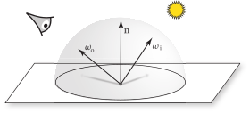
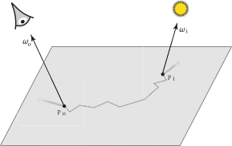

4.3 表面反射（Surface Reflection）
当光线照射到一个表面时，表面会散射光线，将其中一部分反射回环境中。为了对这种反射进行建模，需要描述两个主要效应：反射光的光谱分布和它的方向分布。例如，柠檬的表皮主要吸收蓝色波长的光，但反射大部分红色和绿色波长的光。因此，当它被白光照射时，它的颜色是黄色的。无论从哪个方向观察，它的颜色基本相同，尽管在某些方向上可以看到高光——一个比黄色更接近白色的更亮区域。相反，镜子上某一点反射的光几乎完全取决于观察方向。在镜子的一个固定点上，随着观察角度的变化，镜中反射的物体也会相应地改变。
来自半透明（translucent）表面的反射更加复杂；各种材料，从皮肤和树叶到蜡和液体，都表现出 次表面光传输（subsurface light transport），即光在某一点进入表面，在一段距离之外离开表面。（例如，想象一下，当把手电筒照进嘴里时，脸颊会亮起来，因为进入脸颊内部的光穿过皮肤并从脸部透出。）
有两种抽象概念用于描述这些光反射机制：BRDF 和 BSSRDF，分别在第 4.3.1 节和第 4.3.2 节中描述。 BRDF 描述了在忽略次表面光传输效应的情况下，表面在某一点的反射。对于这种传输机制影响不大的材料，这种简化只会引入很小的误差，并使渲染算法的实现更加高效。 BSSRDF 则是 BRDF 的推广，描述了来自半透明材料的光反射的更一般情况。
4.3.1 BRDF 与 BTDF（The BRDF and the BTDF）
双向反射分布函数（bidirectional reflectance distribution function）（BRDF）提供了一种描述表面反射的形式。考虑图 4.10 中的环境：我们想知道在朝向观察者的方向 \( \omega_\text{o} \) 上离开表面的辐射亮度 \( L_\text{o}(\text{p},\omega_\text{o}) \) 是多少，作为沿着方向 \( \omega_\text{i} \) 入射的辐射亮度 \( L_\text{i}(\text{p},\omega_\text{i}) \) 的结果。（在考虑表面位置的光散射时，pbrt 使用的约定是 \( \omega_\text{i} \) 指的是感兴趣的量（在这种情况下是辐射亮度）到达的方向，而不是 Integrator 到达表面的方向。）
图 4.10：BRDF。 双向反射分布函数是一个关于方向对 \( \omega_\text{i} \) 和 \( \omega_\text{o} \) 的四维函数，描述了沿着 \( \omega_\text{i} \) 入射的光有多少被表面散射到方向 \( \omega_\text{o} \) 。
如果将方向 \( \omega_\text{i} \) 视为方向的微分圆锥，则在 \( \text{p} \) 处的微分辐照度为
\[ \text{d}E(\text{p},\omega_\text{i})=L_\text{i}(\text{p},\omega_\text{i})\cos\theta_\text{i}\text{d}\omega_\text{i} \]
由于这种辐照度，将在方向 \( \omega_{o} \) 反射出微分量的辐射亮度。由于几何光学的线性假设，反射的微分辐射亮度与辐照度成正比
\[ \text{d}L_\text{o}(\text{p},\omega_\text{o}) \propto \text{d}E(\text{p},\omega_\text{i}) \]
比例常数定义了特定方向对 \( \omega_\text{i} \) 和 \( \omega_\text{o} \) 的表面 BRDF \( f_\text{r} \) ：
\[ f_\text{r}(\text{p},\omega_\text{o},\omega_\text{i}) = \frac{\text{d}L_\text{o}(\text{p},\omega_\text{o})}{\text{d}E(\text{p},\omega_\text{i})} = \frac{\text{d}L_\text{o}(\text{p},\omega_\text{o})}{L_\text{i}(\text{p},\omega_\text{i})\cos\theta_\text{i}\text{d}\omega_\text{i}} \]
光谱 BRDF 是通过使用光谱辐射亮度代替辐射亮度来定义的。
基于物理的 BRDF 具有两个重要特性：
-
互易性（Reciprocity）： 对于所有方向对 \( \omega_\text{i} \) 和 \( \omega_\text{o} \)，
\[ f_\text{r}(\text{p},\omega_\text{i},\omega_\text{o}) = f_\text{r}(\text{p},\omega_\text{o},\omega_\text{i}) \] -
能量守恒（Energy conservation）： 反射光的总能量小于或等于入射光的能量。对于所有方向 \( \omega_\text{o} \)， \[ \int_{\text{H}^2(\mathbf{n})} f_\text{r}(\text{p},\omega_\text{o},\omega')\cos\theta'\text{d}\omega' \leq 1 \]
请注意，方向对 \( \omega_\text{i} \) 和 \( \omega_\text{o} \) 的 BRDF 值 不 一定小于 1；只有它的积分具有这种归一化约束。
有两个基于 BRDF 的量有时会很有用。首先，半球-方向反射率（hemispherical-directional reflectance） 是一个二维函数，它给出了由于半球内的恒定照明而在给定方向上的总反射，或者等效地，来自给定方向的光在半球上的总反射。†（这两个量相等的事实是由于反射函数的互易性。）它的定义为
\[ \rho_{\text{hd}}(\omega_\text{o}) = \int_{\text{H}^2(\mathbf{n})} f_\text{r}(\text{p},\omega_\text{o},\omega_\text{i})|\cos\theta_\text{i}|\text{d}\omega_\text{i} \]
BRDF 的 半球-半球反射率（hemispherical-hemispherical reflectance），记作 \( \rho_\text{hh} \)，表示当入射光从各个方向相同时，表面反射的入射光的比例（fraction）。它是
\[ \rho_\text{hh} = \frac{1}{\pi} \int_{\text{H}^2(\mathbf{n})}\int_{\text{H}^2(\mathbf{n})} f_\text{r}(\text{p},\omega_\text{o},\omega_\text{i})|\cos\theta_\text{o}\cos\theta_\text{i}|\text{d}\omega_\text{o}\text{d}\omega_\text{i} \]
表面的 双向透射分布函数（bidirectional transmittance distribution function）（BTDF），描述了透射光的分布，可以以类似于 BRDF 的方式定义。BTDF 通常用 \( f_\text{t}(\text{p},\omega_\text{o},\omega_\text{i}) \) 表示，其中 \( \omega_\text{i} \) 和 \( \omega_\text{o} \) 位于 \( \text{p} \) 周围的相对半球中。值得注意的是，BTDF 并不遵循上述定义的互易性；我们将在第 9.5.2 节中详细讨论这个问题。
为了方便计算，我们将同时考虑 BRDF 和 BTDF 的函数表示为 \( f(\text{p},\omega_\text{o},\omega_\text{i}) \)；我们称之为 双向散射分布函数（bidirectional scattering distribution function）（BSDF）。第 9 章将完全致力于描述多种对渲染有用的 BSDF。
利用 BSDF 的定义，我们有
\[
\text{d}L_\text{o}(\text{p},\omega_\text{o})=f(\text{p},\omega_\text{o},\omega_\text{i})L_\text{i}(\text{p},\omega_\text{i})|\cos\theta_\text{i}|\text{d}\omega_\text{i}
\]
在这里，\( \cos\theta_\text{i} \) 因子被添加了绝对值。这是因为在 pbrt 中的表面法线并没有重新定向到与 \( \omega_\text{i} \) 同一侧（许多其他渲染系统会这样做，但是我们发现将它们保持在 Shape 所给出的自然方向上更为有用）。这样做使得在系统的其他地方一致地应用“假定表面法线指向表面外部”等约定变得更容易。因此，像这样对 \( \cos\theta \) 因子应用绝对值确保了所需量的计算。
我们可以在围绕 \( \text{p} \) 的入射方向的球面上对这个方程进行积分，以计算所有方向上由于 \( \text{p} \) 的入射照明而在方向 \( \omega_\text{o} \) 上的出射辐射亮度
\[
L_\text{o}(\text{p},\omega_\text{o}) = \int_{\text{S}^2} f(\text{p},\omega_\text{o},\omega_\text{i}) L_\text{i}(\text{p},\omega_\text{i})|\cos\theta_\text{i}|\text{d}\omega_\text{i}
\]
这是渲染中的一个基础方程；它描述了在一个点上入射光的分布如何根据表面的散射特性转化为出射分布。当球体 \( \text{S}^2 \) 是定义域时（如这里所示），它通常被称为 散射方程（scattering equation） ；而当仅对上半球 \( \text{H}^2(\mathbf{n}) \) 进行积分时，则称为 反射方程（reflection equation）。在第 13 到 15 章的积分例程中，评估场景中表面上点的这个积分是一个关键任务。
4.3.2 BSSRDF（The BSSRDF）
双向散射表面反射分布函数（bidirectional scattering surface reflectance distribution function）（BSSRDF）是描述具有次表面光传输的材料的散射的形式。它是一个分布函数 \( S(\text{p}_\text{o},\omega_\text{o},\text{p}_\text{i},\omega_\text{i}) \)，描述了在点 \( \text{p}_\text{o} \) 处朝向 \( \omega_\text{o} \) 的出射微分辐射亮度与在 \(\text{p}_\text{i} \) 处来自方向 \( \omega_\text{i} \) 的入射微分通量的比率（图 4.11）：
\[
S(\text{p}_{\text{o}},\omega_{\text{o}},\text{p}_{\text{i}},\omega_{\text{i}}) = \frac{\text{d}L_{\text{o}}(\text{p}_{\text{o}},\omega_{\text{o}})}{\text{d}\Phi(\text{p}_{\text{i}},\omega_{\text{i}})}
\]
图 4.11： 双向散射表面反射分布函数将 BSDF 推广，以考虑光在不同于入射点的表面位置射出的情况。尽管次表面光传输对许多现实世界物体的外观有显著贡献，但其评估通常比 BSDF 更为困难。
对于 BSSRDF 的散射方程的推广，需要对表面积 和 入射方向进行积分，将二维散射方程（4.14）转化为四维积分。
\[ L_\text{o}(\text{p}_\text{o},\omega_\text{o}) = \int_{\text{A}}\int_{\text{H}^2(\mathbf{n})} S(\text{p}_\text{o},\omega_\text{o},\text{p}_\text{i},\omega_\text{i})L_\text{i}(\text{p}_\text{i},\omega_\text{i})|\cos\theta_\text{i}|\text{d}\omega_\text{i}\text{d}A \]
由于需要在两个额外的维度上进行积分，在渲染算法中考虑这一点比方程（4.14）要复杂得多。然而，随着点 \( \text{p}_\text{i} \) 和 \( \text{p}_\text{o} \) 之间的距离增加，\( S \) 的值通常会减小。这个事实在实现次表面散射算法时可以提供实质性的帮助。
光在表面下的传输遵循与参与介质中的体积光传输相同的原理，并由转移方程描述，该方程在第 14.1 节中介绍。因此，次表面散射基于与云和烟雾中的光散射相同的效应——只是规模更小。